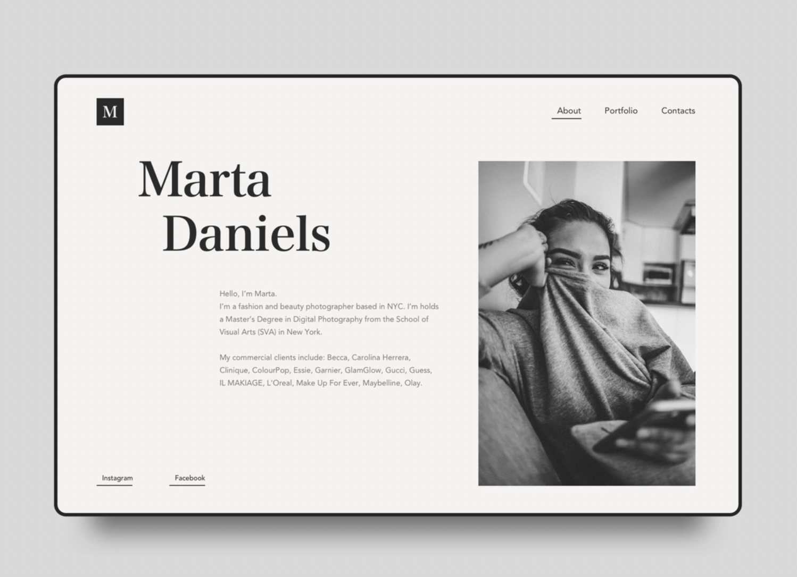
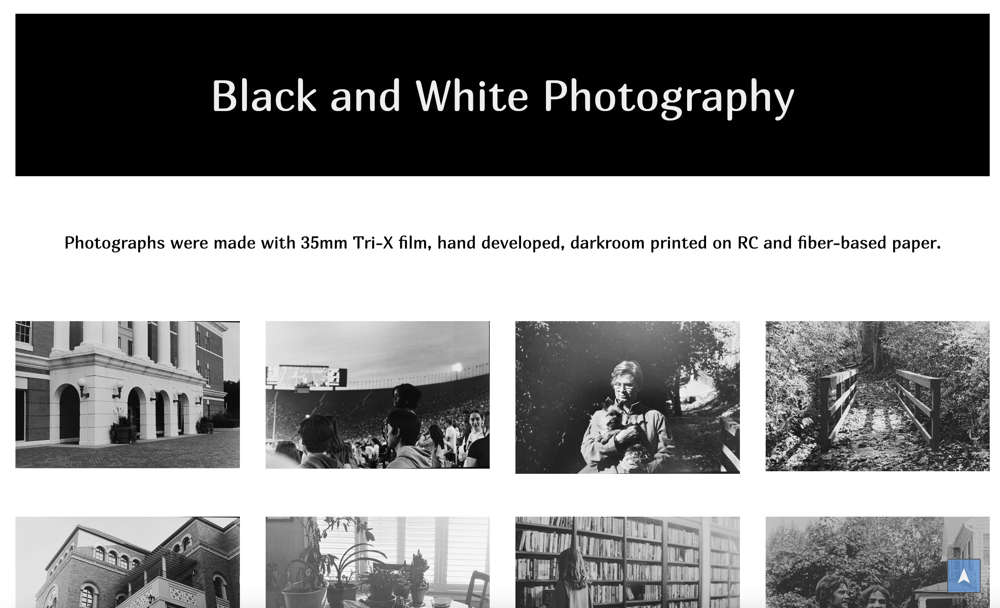
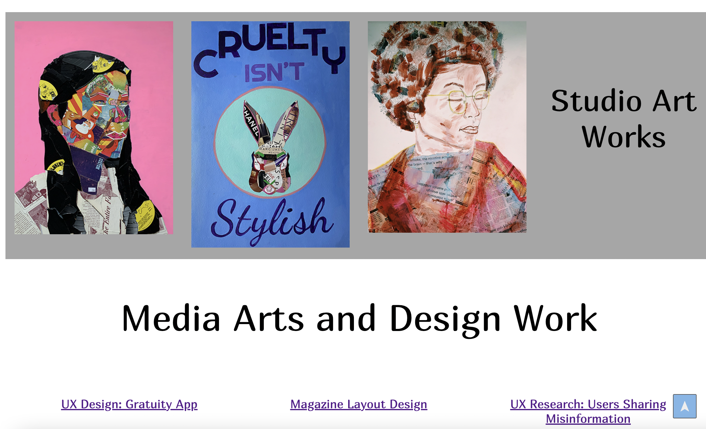
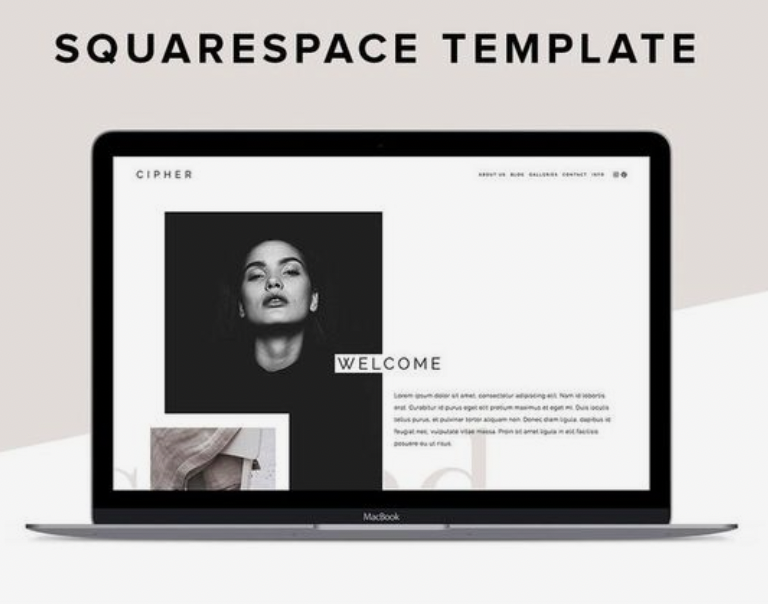
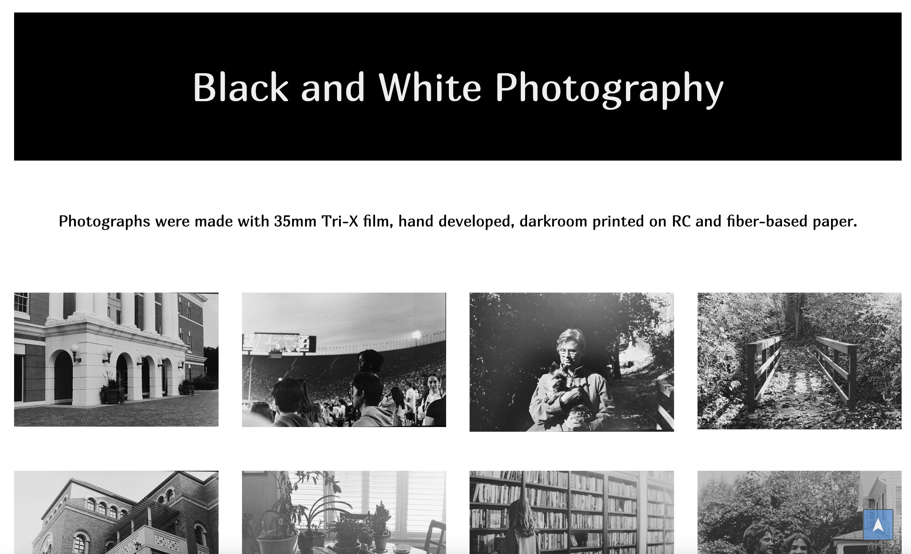
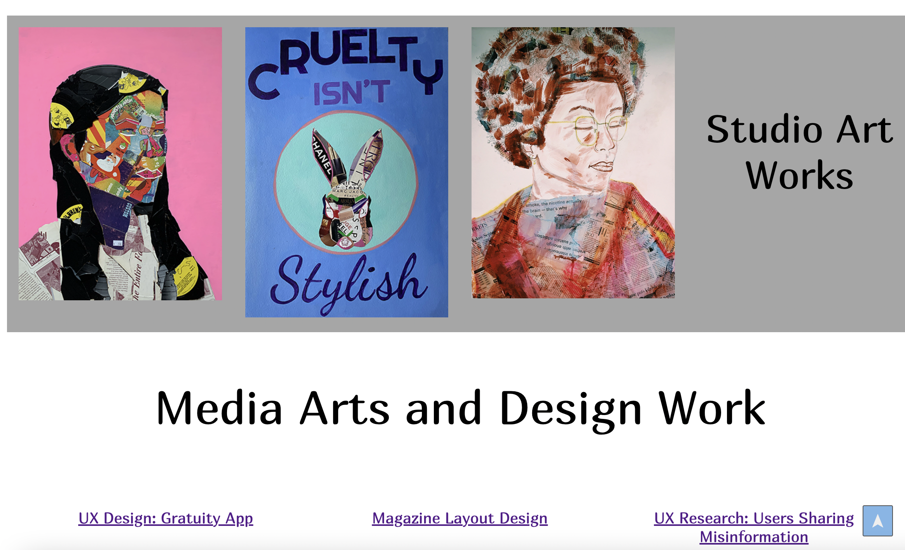
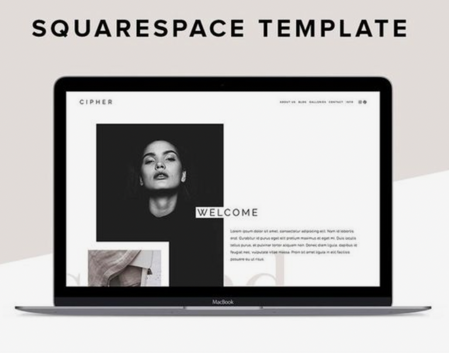

Independent Project Proposal
Martha Ann Henderson
Transformed Portfolio
Overview:
In my independent project over the course of the semester, I will be focusing on redesigning my portfolio using a website builder site called Squarespace. Last semester in SMAD 307, I developed a portfolio website through coding html/css in visual studio code. I intend on using some of the content and style of layout as reference for material in this portfolio. My hope is to make this portfolio much more cohesive in color, typography and overall composition so that my work is presented in a clear and effective manner. I’m a studio art minor along with being a SMAD major, so combining the work that I’ve done in both of these schools will be a challenging yet rewarding project to work on this semester. Portfolio websites are crucial to have in our field as UX designers and researchers, and having them aesthetically professional allows for employers viewing the site to spend less time distracted by the website layout, and focused more on the work that is actually being presented on the site.
Goals:
- Watch tutorials on how to use Squarespace website in order to solidify my understanding of the site and navigate it well enough to create the desired looks/outcomes.
- Organize the Artworks and the SMAD works so that they make sense. (Perhaps having background images of artwork on rotation and SMAD projects displayed differently).
- Use appropriate layouts and clear intentional interactions (design strategies from Technically Wrong).
Audience:
The audience that I’m targeting are potential employers or recruiters for UX designers or researchers that are looking for a creative and skilled individual. They are interested in prior accomplishment of work in the field as well as creative works that portray knowledge of the interaction design projects and artistic expression that can be helpful for their company/job role.
Timeline:
Week 1: Feb. 22- March 1: Squarespace Tutorial / Exploration of different layouts.
Week 2: March 2-9: Continued Research on Layouts/Squarespace layout picked out. Organize works that will be used on site.
Week 3: March 10- 18: Have information laid out on Squarespace, potentially finished for review.
Visual Inspiration:

 




